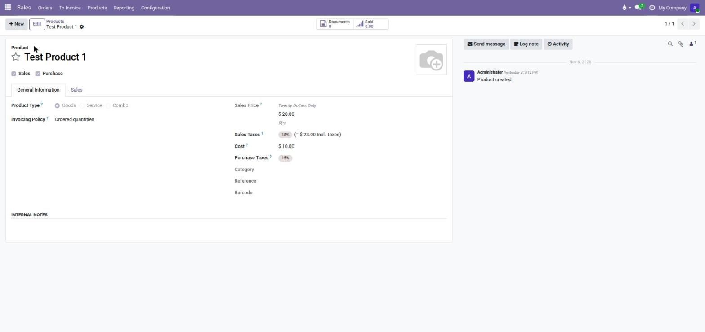
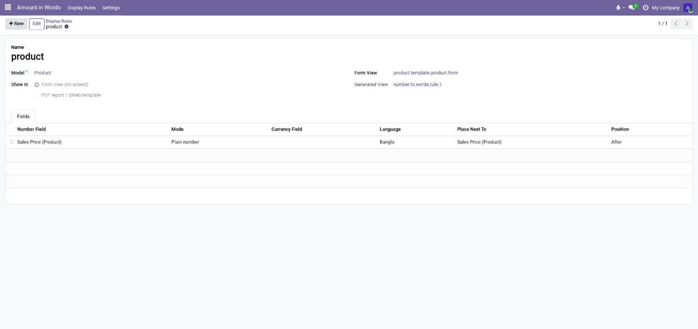
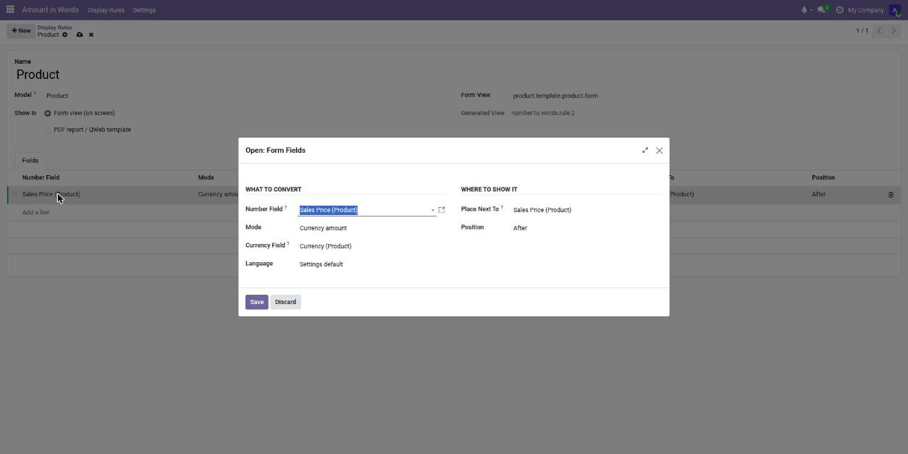
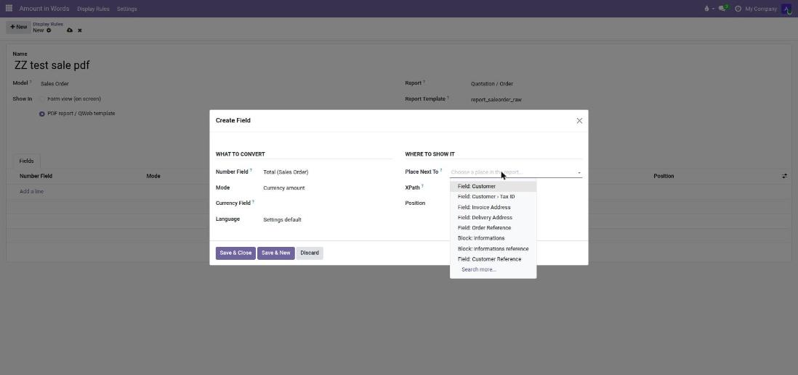
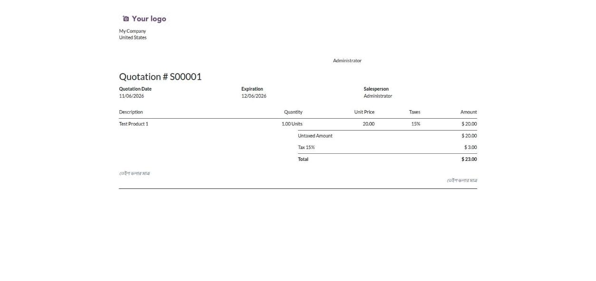
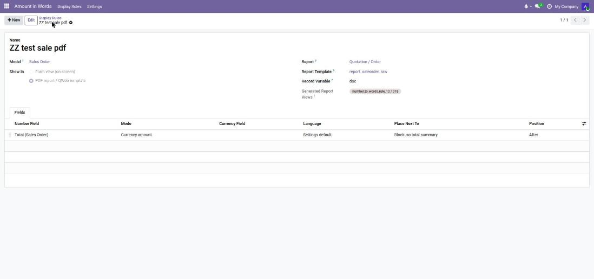
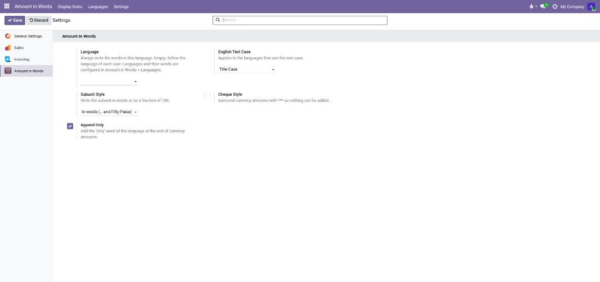

123 → One Hundred Twenty-Three | একশত তেইশ
Any model · any field · forms and PDF reports · zero dependencies







| Area | What you get |
|---|---|
| Languages | Built in: English (international or lakh/crore), Bangla, Hindi, Urdu. Automatic: Spanish, Arabic, French, German, Portuguese, Russian, Italian, Turkish, Indonesian, Japanese, Korean, Vietnamese, Persian and more |
| Values | Integers, decimals (read digit by digit), negatives, currency amounts with unit and subunit |
| Display Rules | Form views and PDF reports, before/after any field or any part of a report picked from a plain-words list (no XPath), per-line language and mode |
| Currencies | Unit and subunit of the currency (Taka / Paisa, টাকা / পয়সা), common currencies included |
| Formatting | Title / lower / UPPER case, "Only / মাত্র", cheque style *** … ***, subunit as words or 50/100, Bangla hundreds as "এক শত" or "একশো" |
| Widget | number_to_words field widget for Float, Integer and Monetary fields |
| Developers | env['number.to.words'].to_words(value, lang, mode, currency_id) from Python, QWeb or JSON-RPC |
| Any app | One module, no code per app: you choose the model, the field and the place. Sales, Purchase, Invoices, Inventory, HR… any integer, float or monetary field |
Hindi: दो लाख तीन सौ पैंतालीस डॉलर मात्र | Urdu: دو لاکھ تین سو پینتالیس ڈالر صرف | Spanish: Doscientos Mil Trescientos Cuarenta Y Cinco
| Input | English | বাংলা |
|---|---|---|
| 12,345,678 | Twelve Million Three Hundred Forty-Five Thousand Six Hundred Seventy-Eight | এক কোটি তেইশ লক্ষ পঁয়তাল্লিশ হাজার ছয় শত আটাত্তর |
| 12.34 | Twelve Point Three Four | বারো দশমিক তিন চার |
| 150.50 BDT | One Hundred Fifty Taka and Fifty Paisa | এক শত পঞ্চাশ টাকা এবং পঞ্চাশ পয়সা |
Does it need num2words? No, the engines are included.
Does it change my invoices? Only if you choose Bangla, a forced language or lakh/crore. Otherwise Odoo's own behaviour is untouched.
Which languages are supported? English, Bangla, Hindi and Urdu are built in. Every other language that Odoo's own num2words library supports (about 45, including Spanish, Arabic, French, German, Portuguese, Russian, Turkish, Indonesian, Japanese, Korean) is written automatically in the language of the user. A language supported by neither is written in English.
Bug reports and questions are answered through the Odoo Apps page of this module.